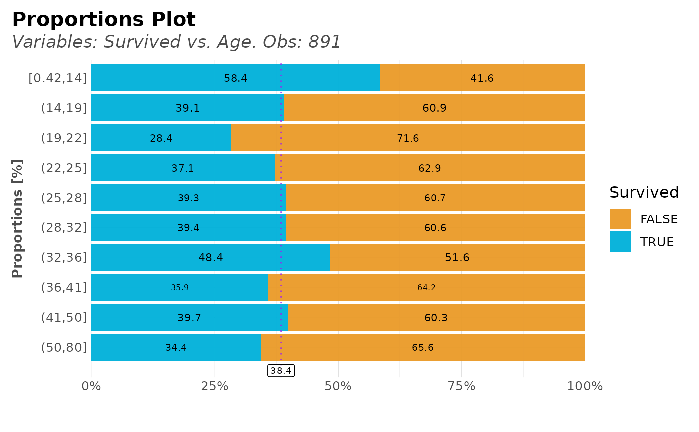

Compare the distribution of a target variable vs another variable. This function automatically splits into quantiles for numerical variables. Custom and tidyverse friendly.
distr( data, ..., type = 1, ref = TRUE, note = NA, top = 10, breaks = 10, na.rm = FALSE, force = "none", trim = 0, clean = FALSE, abc = FALSE, custom_colours = FALSE, plot = TRUE, chords = FALSE, save = FALSE, subdir = NA )
Arguments
| data | Dataframe |
|---|---|
| ... | Variables. Main (target variable) and secondary (values variable) to group by |
| type | Integer. 1 for both plots, 2 for counter plot only, 3 por percentages plot only. |
| ref | Boolean. Show a reference line if levels = 2? Quite useful when data is unbalanced (not 50/50) because a reference line is drawn |
| note | Character. Caption for the plot |
| top | Integer. Filter and plot the most n frequent for categorical values |
| breaks | Integer. Number of splits for numerical values |
| na.rm | Boolean. Ignore NAs if needed |
| force | Character. Force class on the values data. Choose between 'none', 'character', 'numeric', 'date' |
| trim | Integer. Trim labels until the nth character for categorical values (applies for both, target and values) |
| clean | Boolean. Use lares::cleanText for categorical values (applies for both, target and values) |
| abc | Boolean. Do you wish to sort by alphabetical order? |
| custom_colours | Boolean. Use custom colours function? |
| plot | Boolean. Return a plot? Otherwise, a table with results |
| chords | Boolean. Use a chords plot? |
| save | Boolean. Save the output plot in our working directory |
| subdir | Character. Into which subdirectory do you wish to save the plot to? |
See also
Other Exploratory:
corr_cross(),
corr_var(),
crosstab(),
df_str(),
freqs_df(),
freqs_list(),
freqs_plot(),
freqs(),
lasso_vars(),
missingness(),
plot_cats(),
plot_df(),
plot_nums(),
summer(),
tree_var(),
trendsRelated()
Other Visualization:
freqs_df(),
freqs_list(),
freqs_plot(),
freqs(),
gg_bars(),
gg_pie(),
noPlot(),
plot_chord(),
plot_survey(),
plot_timeline(),
summer(),
theme_lares(),
tree_var()
Examples
# \donttest{ options("lares.font" = NA) # Temporal data(dft) # Titanic dataset # Relation for categorical/categorical values dft %>% distr(Survived, Sex)#> # A tibble: 10 x 5 #> targets value n p pcum #> <lgl> <fct> <int> <dbl> <dbl> #> 1 FALSE (7.9,8.1] 87 82.1 82.1 #> 2 FALSE [0,7.5] 79 85.9 85.9 #> 3 TRUE (78,5.1e+02] 66 75.9 75.9 #> 4 FALSE (7.5,7.9] 61 70.1 70.1 #> 5 FALSE (8.1,10] 60 76.9 76.9 #> 6 FALSE (27,40] 57 62.6 62.6 #> 7 FALSE (14,22] 51 58.0 58.0 #> 8 FALSE (10,14] 48 57.1 57.1 #> 9 TRUE (40,78] 47 52.8 52.8 #> 10 TRUE (22,27] 46 51.7 51.7# Sort values dft %>% distr(Survived, Fare, abc = TRUE)# Less splits/breaks dft %>% distr(Survived, Fare, abc = TRUE, breaks = 5)# Distribution of numerical only dft[dft$Fare < 20,] %>% distr(Fare)# Distribution of numerical/numerical dft %>% distr(Fare, Age)# Select only one of the two default plots of distr() dft %>% distr(Survived, Age, type = 2)dft %>% distr(Survived, Age, type = 3)# }